Conference Papers
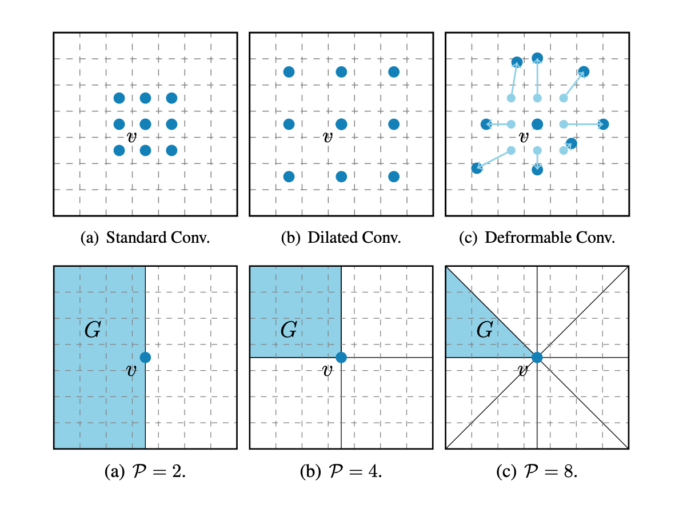
Look Before You Leap: Learning Landmark Features For One-Stage Visual Grounding
Binbin Huang, Dongze Lian, Weixin Luo, Shenghua Gao
Accepted by
CVPR 2021
[Code]


Prior Based Human Completion
Zibo Zhao, Wen Liu, Yanyu Xu, Xianing Chen, Weixin Luo, Lei Jin, Bohui Zhu, Tong Liu, Binqiang Zhao, Shenghua Gao
Accepted by
CVPR 2021
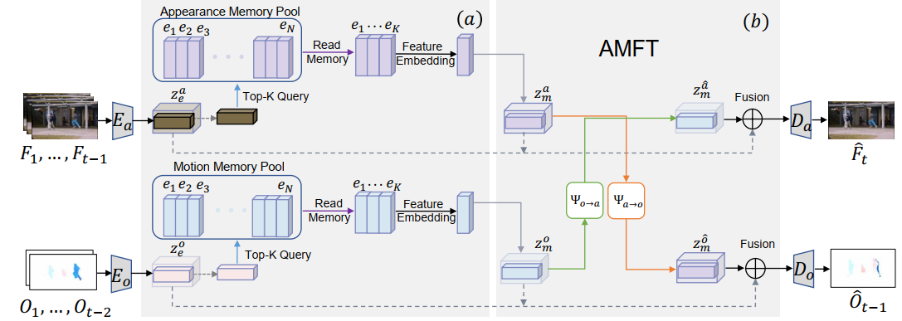
Appearance-Motion Memory Consistency Network for Video Anomaly Detection
Ruichu Cai, Hao Zhang, Wen Liu, Shenghua Gao, Zhifeng Hao
Accepted by
AAAI 2021
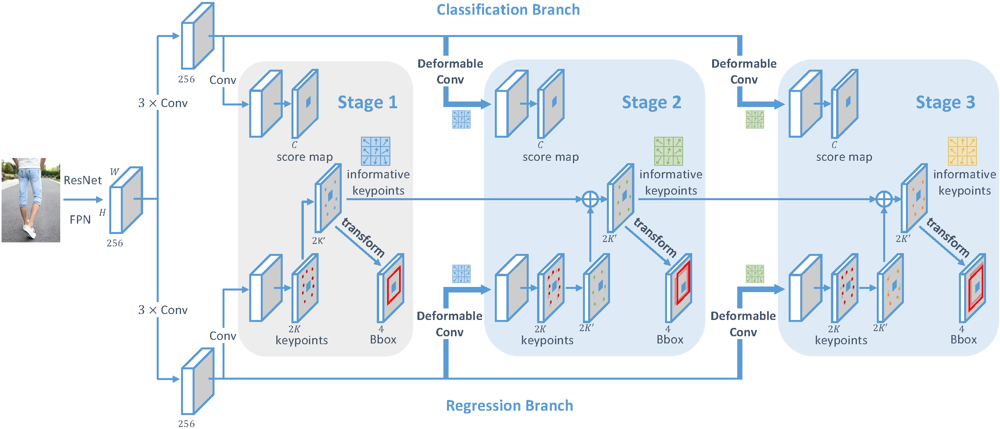
KGDet: Keypoint-Guided Fashion Detection
Shenhan Qian*, Dongze Lian*, Binqiang Zhao, Tong Liu, Bohui Zhu, Hai Li, Shenghua Gao
Accepted by
AAAI 2021
[Code]


SIRI: Spatial Relation Induced Network For Spatial Description Resolution
Peiyao Wang*, Weixin Luo*, Yanyu Xu, Haojie Li, Shugong Xu, Jianyu Yang, Shenghua Gao
Accepted by
NeurIPS 2020
[Paper]


Encoding Structure-Texture Relation with P-Net for Anomaly Detection in Retinal Images
Kang Zhou*, Yuting Xiao*, Jianlong Yang, Jun Cheng, Wen Liu, Weixin Luo, Zaiwang Gu, Jiang Liu, Shenghua Gao.
Accepted by
ECCV 2020
[Code]
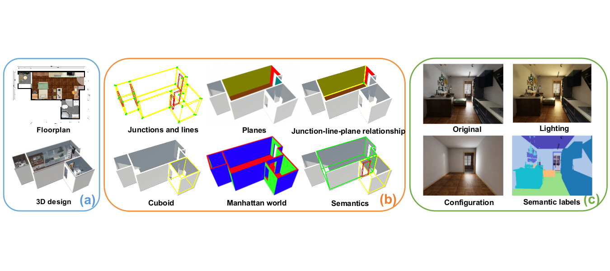
Structured3D: A Large Photo-realistic Dataset for Structured 3D Modeling
Jia Zheng*, Junfei Zhang*, Jing Li, Rui Tang, Shenghua Gao, Zihan Zhou
Accepted by
ECCV 2020
[Paper] [Supplemental Material] [Code] [Website]
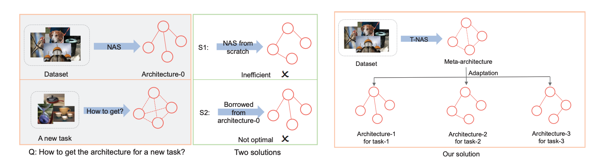
Towards Fast Adaptation of Neural Architectures with Meta Learning
Dongze Lian, Yin Zheng, Yintao Xu, Yanxiong Lu, Leyu Lin, Peilin Zhao, Junzhou Huang, Shenghua Gao
Accepted by
ICLR 2020
[Paper]
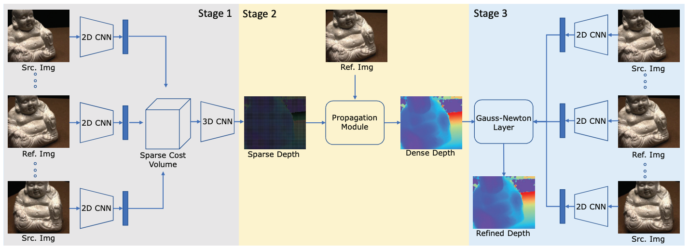
Fast-MVSNet: Sparse-to-Dense Multi-View Stereo With Learned Propagation and Gauss-Newton Refinement
Zehao Yu, Shenghua Gao
Accepted by
CVPR 2020
[Paper] [Supplemental Material] [Code]

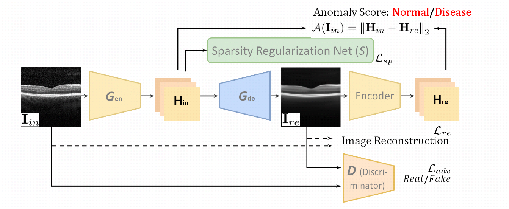
Sparse-GAN: Sparsity-constrained Generative Adversarial Network for Retinal OCT Image Anomaly Detection
Kang Zhou, Shenghua Gao, Jun Cheng, Zaiwang Gu, Huazhu Fu, Zhi Tu, Jianlong Yang, Yitian Zhao, Jiang Liu
Accepted by
ISBI 2020
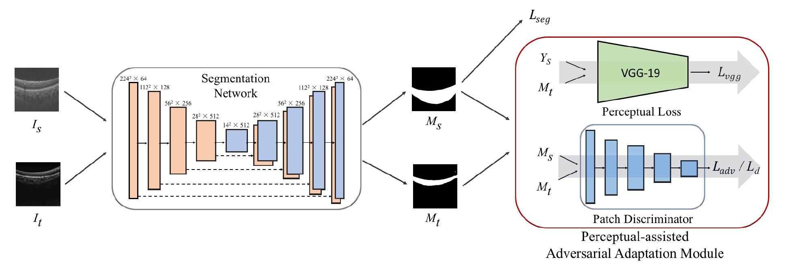
Perceptual-assisted Adversarial Adaptation for Choroid Segmentation in Optical Coherence Tomography
Zhenjie Chai*, Kang Zhou*, Jianlong Yang, Yuhui Ma, Zhi Chen, Shenghua Gao, Jiang Liu
Accepted by
ISBI 2020
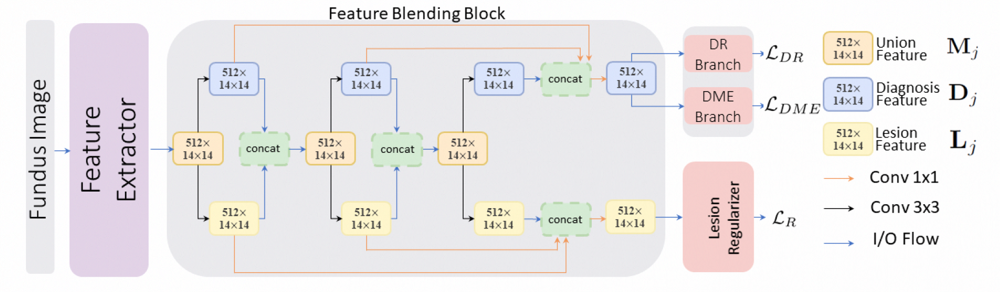
SUNet: A Lesion Regularized Model for Simultaneous Diabetic Retinopathy and Diabetic Macular Edema Grading
Zhi Tu, Shenghua Gao, Kang Zhou, Xianing Chen, Huazhu Fu, Zaiwang Gu, Jun Cheng, Zehao Yu, Jiang Liu
Accepted by
ISBI 2020
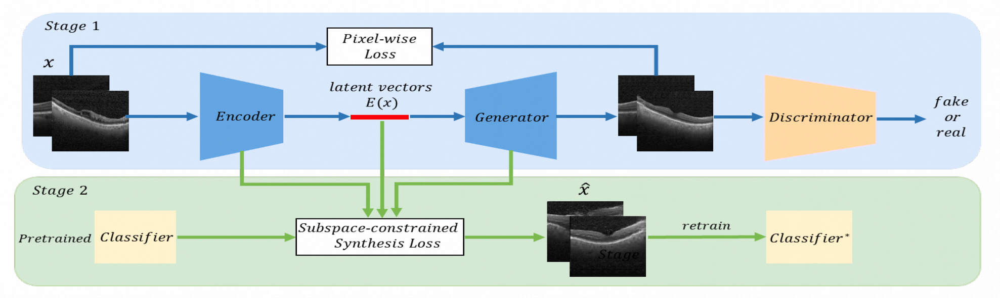
Open-Set OCT Image Recognition with Synthetic Learning
Yuting Xiao, Shenghua Gao, Zhenjie Chai, Kang Zhou, Tianyang Zhang, Yitian Zhao, Jun Cheng, Jiang Liu
Accepted by
ISBI 2020

Liquid Warping GAN: A Unified Framework for Human Motion Imitation, Appearance Transfer and
Novel View Synthesis
Wen Liu*, Zhixin Piao*, Jie Min, Wenhan Luo, Lin Ma, Shenghua
Gao
Accepted by
ICCV 2019
[Paper] [Supplemental Material] [Code] [Website]
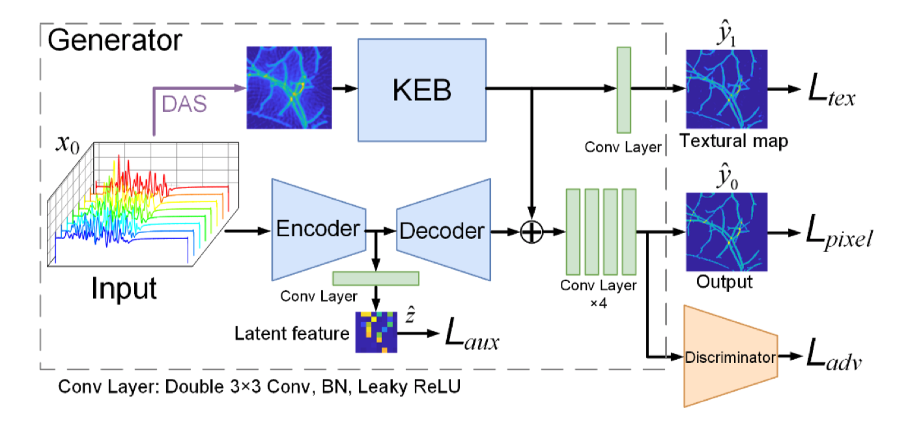
Ki-GAN: Knowledge Infusion Generative Adversarial Network for Photoacoustic Image
Reconstruction in vivo
Hengrong Lan*, Kang Zhou*, Changchun Yang, Jun Cheng, Jiang
Liu, Shenghua Gao^, Fei Gao^
Accepted by
MICCAI 2019
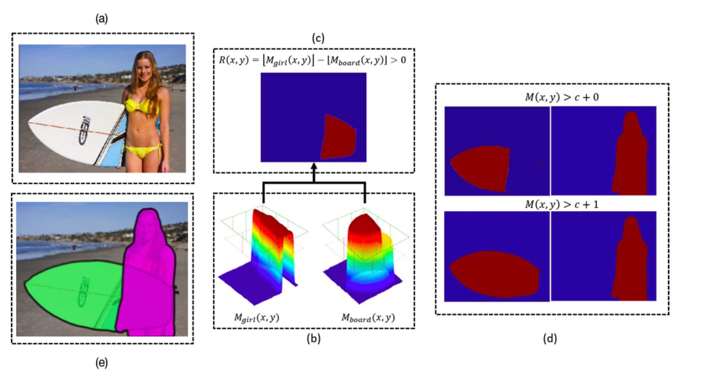
Learning Semantics-aware Distance Map with Semantics Layering Network for Amodal Instance
Segmentation
Ziheng Zhang*, Anpei Chen*, Ling Xie, Jingyi Yu, Shenghua
Gao
Accepted by
ACM MM 2019
[Paper]
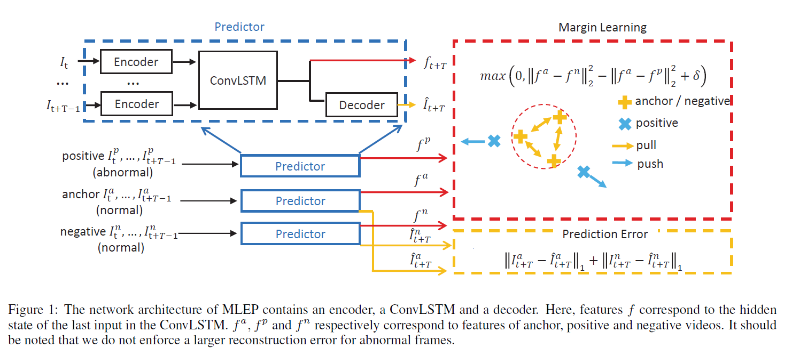
Margin Learning Embedded Prediction for Video Anomaly Detection with A Few Anomalies
Wen Liu*, Weixin Luo*, Zhengxin Li, Peilin Zhao, Shenghua
Gao
Accepted by
IJCAI 2019
[Paper]
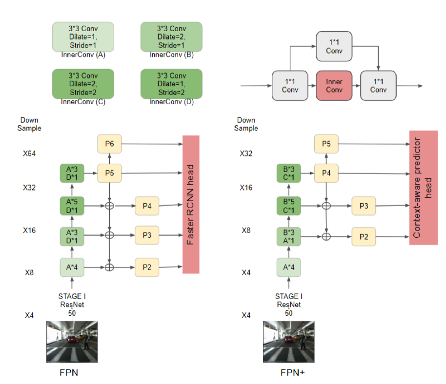
FPN++: A SIMPLE BASELINE FOR PEDESTRIAN DETECTION
Junhao Hu*, Lei Jin*, Shenghua Gao
Accepted by
ICME 2019
[Paper]


Beyond Universal Saliency: Personalized Saliency
Prediction with Multi-task CNN
Yanyu Xu, Nianyi Li, Junru Wu, Jingyi Yu, Shenghua Gao
Accepted by
IJCAI 2017
(Best Student Paper Run-upper)
[Paper]

Bi-Level Multi-Column Convolutional Neural Networks
for Facial Landmark Point Detection
Yanyu Xu, Shenghua Gao
Accepted by
ECCV 2016 Workshop

Single-Image Crowd Counting via Multi-Column
Convolutional Neural Network
Yingying Zhang, Desen Zhou, Siqin Chen, Shenghua Gao, Yi Ma
Accepted by
CVPR 2016
[Paper]
Journal Papers

Multi-view Multi-task Gaze Prediction with Deep
Convolutional Neural Networks
Dongze Lian, Shenghua Gao, Lina Hu, Weixin Luo, Yanyu Xu, Lixin Duan, Jingyi
Yu
Accepted by
TNNLS 2018
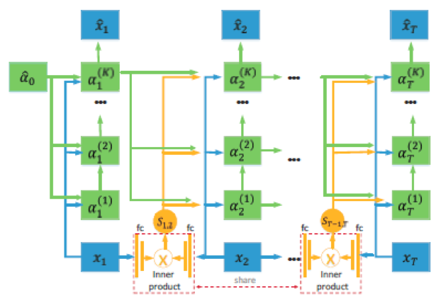
Video Anomaly Detection with Sparse Coding Inspired
Deep Neural Networks
Weixin Luo
*, Wen Liu
*, Shenghua Gao, Dongze Lian
Accepted by
TPAMI 2019

Multi-column CNN and its Applications for Crowd
Counting and Face Alignment
Yanyu Xu, Shenghua Gao, Yingying Zhang, Yi Ma
Submitted to
IJCV 2018
(under review)